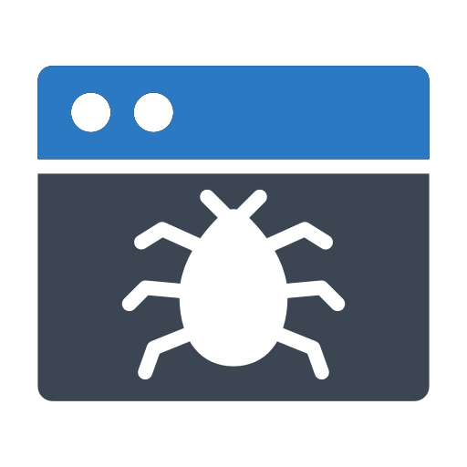

tema4-3b
 Tipos de XSS
Tipos de XSS
 XSS
Cross-site scripting es un tipo de vulnerabilidad informática o agujero de seguridad
típico de las aplicaciones Web, que puede permitir a una tercera persona inyectar en páginas web
visitadas por el usuario código JavaScript o en otro lenguaje similar, se puede evitar usando medidas
como CSP Política del mismo origen.
XSS
Cross-site scripting es un tipo de vulnerabilidad informática o agujero de seguridad
típico de las aplicaciones Web, que puede permitir a una tercera persona inyectar en páginas web
visitadas por el usuario código JavaScript o en otro lenguaje similar, se puede evitar usando medidas
como CSP Política del mismo origen.
 XSS-Directa
Algunos usan esta vulnerabilidad para hacer un desface usando
una
etiqueta "div>" que
cubra toda la web o con un script que la redirecciones a un sitio web clonado.>
XSS-Directa
Algunos usan esta vulnerabilidad para hacer un desface usando
una
etiqueta "div>" que
cubra toda la web o con un script que la redirecciones a un sitio web clonado.>

XSS-Indirecta
Es muy común encontrarlo en motores de búsqueda, en él se
inyecta
a través de
formularios, url, cookies programadas en flash o incluso en videos los el XSS necesario para realizar
el
ataque.
https://es.wikipedia.org/wiki/Cross-site_scripting